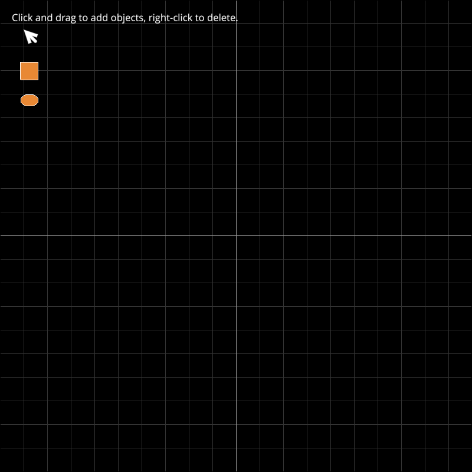

Note
Click here to download the full example code
Draw and Edit Shapes with Mouse#
Simple demonstration of drawing and editing shapes with the mouse This demo implements mouse picking on visuals and markers using the vispy scene and “visual_at” mechanism. Left mouse button on empty space creates new objects. Objects can be selected by clicking, and moved by dragging. Dragging control points changes the size of the object. Vispy takes care of coordinate transforms from screen to ViewBox - the demo works on different zoom levels. Lastly, additional objects are added to the view in a fixed position as “buttons” to select which type of object is being created. Selecting the arrow symbol will switch into select/pan mode where the left drag moves the workplane or moves objects/controlpoints.
Out:
/home/runner/work/vispy/vispy/examples/scene/shape_draw.py:43: DeprecationWarning: The symbol parameter is deprecated. Use MarkersVisual.symbol instead
c.set_data(pos=np.array([[0, 0]],
import numpy as np
from vispy import app, scene
from vispy.color import Color
class ControlPoints(scene.visuals.Compound):
def __init__(self, parent):
scene.visuals.Compound.__init__(self, [])
self.unfreeze()
self.parent = parent
self._center = [0, 0]
self._width = 0.0
self._height = 0.0
self.selected_cp = None
self.opposed_cp = None
self.control_points = [scene.visuals.Markers(parent=self)
for i in range(0, 4)]
for c in self.control_points:
c.set_data(pos=np.array([[0, 0]],
dtype=np.float32),
symbol="s",
edge_color="red",
size=6)
c.interactive = True
self.freeze()
def update_bounds(self):
self._center = [0.5 * (self.parent.bounds(0)[1] +
self.parent.bounds(0)[0]),
0.5 * (self.parent.bounds(1)[1] +
self.parent.bounds(1)[0])]
self._width = self.parent.bounds(0)[1] - self.parent.bounds(0)[0]
self._height = self.parent.bounds(1)[1] - self.parent.bounds(1)[0]
self.update_points()
def update_points(self):
self.control_points[0].set_data(
pos=np.array([[self._center[0] - 0.5 * self._width,
self._center[1] + 0.5 * self._height]]))
self.control_points[1].set_data(
pos=np.array([[self._center[0] + 0.5 * self._width,
self._center[1] + 0.5 * self._height]]))
self.control_points[2].set_data(
pos=np.array([[self._center[0] + 0.5 * self._width,
self._center[1] - 0.5 * self._height]]))
self.control_points[3].set_data(
pos=np.array([[self._center[0] - 0.5 * self._width,
self._center[1] - 0.5 * self._height]]))
def select(self, val, obj=None):
self.visible(val)
self.selected_cp = None
self.opposed_cp = None
if obj is not None:
n_cp = len(self.control_points)
for i in range(0, n_cp):
c = self.control_points[i]
if c == obj:
self.selected_cp = c
self.opposed_cp = \
self.control_points[int((i + n_cp / 2)) % n_cp]
def start_move(self, start):
None
def move(self, end):
if not self.parent.editable:
return
if self.selected_cp is not None:
self._width = 2 * (end[0] - self._center[0])
self._height = 2 * (end[1] - self._center[1])
self.update_points()
self.parent.update_from_controlpoints()
def visible(self, v):
for c in self.control_points:
c.visible = v
def get_center(self):
return self._center
def set_center(self, val):
self._center = val
self.update_points()
class EditVisual(scene.visuals.Compound):
def __init__(self, editable=True, selectable=True, on_select_callback=None,
callback_argument=None, *args, **kwargs):
scene.visuals.Compound.__init__(self, [], *args, **kwargs)
self.unfreeze()
self.editable = editable
self._selectable = selectable
self._on_select_callback = on_select_callback
self._callback_argument = callback_argument
self.control_points = ControlPoints(parent=self)
self.drag_reference = [0, 0]
self.freeze()
def add_subvisual(self, visual):
scene.visuals.Compound.add_subvisual(self, visual)
visual.interactive = True
self.control_points.update_bounds()
self.control_points.visible(False)
def select(self, val, obj=None):
if self.selectable:
self.control_points.visible(val)
if self._on_select_callback is not None:
self._on_select_callback(self._callback_argument)
def start_move(self, start):
self.drag_reference = start[0:2] - self.control_points.get_center()
def move(self, end):
if self.editable:
shift = end[0:2] - self.drag_reference
self.set_center(shift)
def update_from_controlpoints(self):
None
@property
def selectable(self):
return self._selectable
@selectable.setter
def selectable(self, val):
self._selectable = val
@property
def center(self):
return self.control_points.get_center()
@center.setter
# this method redirects to set_center. Override set_center in subclasses.
def center(self, val):
self.set_center(val)
# override this method in subclass
def set_center(self, val):
self.control_points.set_center(val[0:2])
def select_creation_controlpoint(self):
self.control_points.select(True, self.control_points.control_points[2])
class EditRectVisual(EditVisual):
def __init__(self, center=[0, 0], width=20, height=20, *args, **kwargs):
EditVisual.__init__(self, *args, **kwargs)
self.unfreeze()
self.rect = scene.visuals.Rectangle(center=center, width=width,
height=height,
color=Color("#e88834"),
border_color="white",
radius=0, parent=self)
self.rect.interactive = True
self.freeze()
self.add_subvisual(self.rect)
self.control_points.update_bounds()
self.control_points.visible(False)
def set_center(self, val):
self.control_points.set_center(val[0:2])
self.rect.center = val[0:2]
def update_from_controlpoints(self):
try:
self.rect.width = abs(self.control_points._width)
except ValueError:
None
try:
self.rect.height = abs(self.control_points._height)
except ValueError:
None
class EditEllipseVisual(EditVisual):
def __init__(self, center=[0, 0], radius=[2, 2], *args, **kwargs):
EditVisual.__init__(self, *args, **kwargs)
self.unfreeze()
self.ellipse = scene.visuals.Ellipse(center=center, radius=radius,
color=Color("#e88834"),
border_color="white",
parent=self)
self.ellipse.interactive = True
self.freeze()
self.add_subvisual(self.ellipse)
self.control_points.update_bounds()
self.control_points.visible(False)
def set_center(self, val):
self.control_points.set_center(val)
self.ellipse.center = val
def update_from_controlpoints(self):
try:
self.ellipse.radius = [0.5 * abs(self.control_points._width),
0.5 * abs(self.control_points._height)]
except ValueError:
None
class Canvas(scene.SceneCanvas):
""" A simple test canvas for drawing demo """
def __init__(self):
scene.SceneCanvas.__init__(self, keys='interactive',
size=(800, 800))
self.unfreeze()
self.view = self.central_widget.add_view()
self.view.camera = scene.PanZoomCamera(rect=(-100, -100, 200, 200),
aspect=1.0)
# the left mouse button pan has to be disabled in the camera, as it
# interferes with dragging line points
# Proposed change in camera: make mouse buttons configurable
self.view.camera._viewbox.events.mouse_move.disconnect(
self.view.camera.viewbox_mouse_event)
scene.visuals.Text("Click and drag to add objects, " +
"right-click to delete.",
color='w',
anchor_x='left',
parent=self.view,
pos=(20, 30))
self.select_arrow = \
EditVisual(parent=self.view, editable=False,
on_select_callback=self.set_creation_mode,
callback_argument=None)
arrow = scene.visuals.Arrow(parent=self.select_arrow,
pos=np.array([[50, 60], [60, 70]]),
arrows=np.array([[60, 70, 50, 60]]),
width=5, arrow_size=15.0,
arrow_type="angle_60",
color="w",
arrow_color="w",
method="agg"
)
self.select_arrow.add_subvisual(arrow)
self.rect_button = \
EditRectVisual(parent=self.view, editable=False,
on_select_callback=self.set_creation_mode,
callback_argument=EditRectVisual,
center=[50, 120], width=30, height=30)
self.ellipse_button = \
EditEllipseVisual(parent=self.view,
editable=False,
on_select_callback=self.set_creation_mode,
callback_argument=EditEllipseVisual,
center=[50, 170],
radius=[15, 10])
self.objects = []
self.show()
self.selected_point = None
self.selected_object = None
self.creation_mode = EditRectVisual
self.mouse_start_pos = [0, 0]
scene.visuals.GridLines(parent=self.view.scene)
self.freeze()
def set_creation_mode(self, object_kind):
self.creation_mode = object_kind
def on_mouse_press(self, event):
tr = self.scene.node_transform(self.view.scene)
pos = tr.map(event.pos)
self.view.interactive = False
selected = self.visual_at(event.pos)
self.view.interactive = True
if self.selected_object is not None:
self.selected_object.select(False)
self.selected_object = None
if event.button == 1:
if selected is not None:
self.selected_object = selected.parent
# update transform to selected object
tr = self.scene.node_transform(self.selected_object)
pos = tr.map(event.pos)
self.selected_object.select(True, obj=selected)
self.selected_object.start_move(pos)
self.mouse_start_pos = event.pos
# create new object:
if self.selected_object is None and self.creation_mode is not None:
# new_object = EditRectVisual(parent=self.view.scene)
new_object = self.creation_mode(parent=self.view.scene)
self.objects.append(new_object)
new_object.select_creation_controlpoint()
new_object.set_center(pos[0:2])
self.selected_object = new_object.control_points
if event.button == 2: # right button deletes object
if selected is not None and selected.parent in self.objects:
self.objects.remove(selected.parent)
selected.parent.parent = None
self.selected_object = None
def on_mouse_move(self, event):
if event.button == 1:
if self.selected_object is not None:
self.view.camera._viewbox.events.mouse_move.disconnect(
self.view.camera.viewbox_mouse_event)
# update transform to selected object
tr = self.scene.node_transform(self.selected_object)
pos = tr.map(event.pos)
self.selected_object.move(pos[0:2])
else:
self.view.camera._viewbox.events.mouse_move.connect(
self.view.camera.viewbox_mouse_event)
else:
None
if __name__ == '__main__':
canvas = Canvas()
app.run()
Total running time of the script: ( 0 minutes 1.530 seconds)